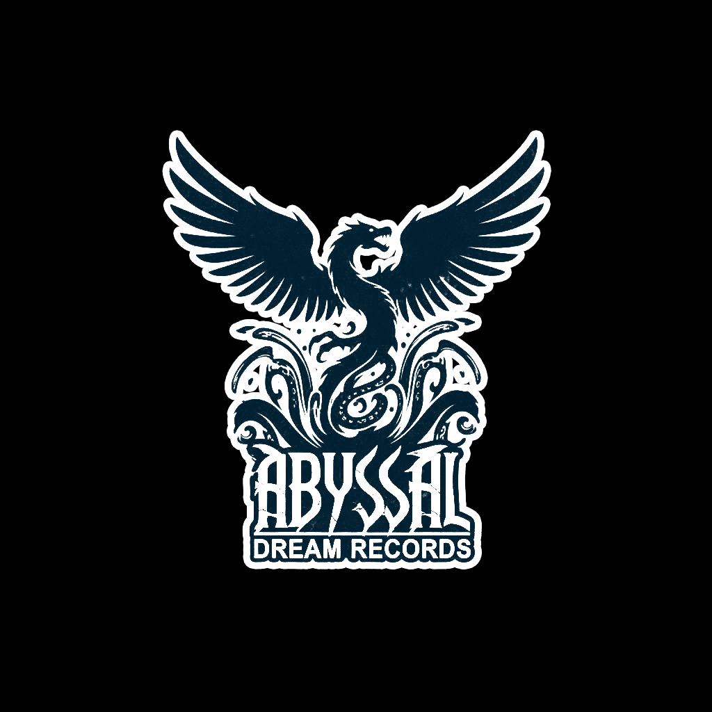
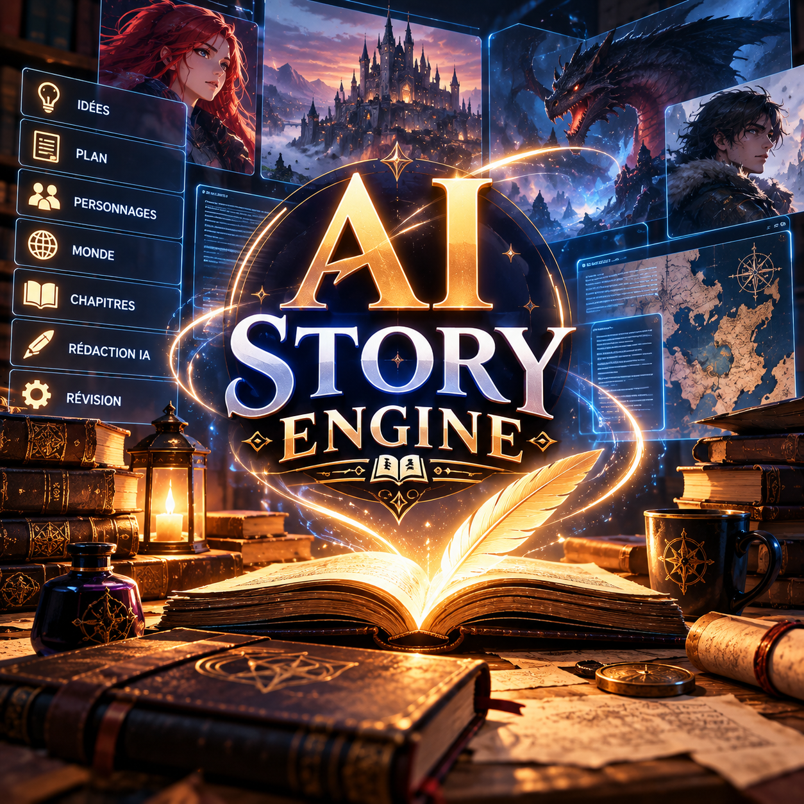

SYS_01 // PIPELINE
PRODUCTION
Crimson Lux
Pipeline d'automatisation IA pour la génération et le traitement d'images avec workflow complet de tri et organisation.
// IA · AUTOMATISATION · CODE DE PRODUCTION
Autodidacte en automatisation et IA appliquée — pipelines de génération, orchestration multi-agents, workflows orientés production réelle.
Autodidacte en automatisation et IA appliquée, je conçois des systèmes orientés production réelle : génération de contenu à grande échelle, tri automatisé, exploitation de métadonnées et orchestration de workflows.
Issu d'un parcours technique, je m'oriente aujourd'hui vers une alternance afin de structurer et professionnaliser ces compétences au sein d'une équipe de production.
Sélection de 5 projets conçus avec une approche orientée production, modularité technique et intégration de modèles d'IA locaux et distribués.
Pipeline d'automatisation IA pour la génération et le traitement d'images avec workflow complet de tri et organisation.
Déclinaison manga/anime de Crimson Lux, exploration artistique et adaptation stylistique de l'automatisation IA.

Projet artistique IA combinant musique, visuels et stratégie de réseaux sociaux avec focus sur le storytelling.
Automatisation de la traduction de jeux vidéo Ren'Py par intelligence artificielle et modèles de langage locaux.

Moteur expérimental de génération narrative multi-agents orchestré en Python avec mémoire structurée en nœuds.
Recherche active d'une alternance en développement IA, automatisation de workflows et intégration de modèles locaux.
Rythme 4 jours en entreprise / 1 jour en formation. Profil orienté automatisation de workflows, outils sur-mesure et intégration de modèles d'IA en production.